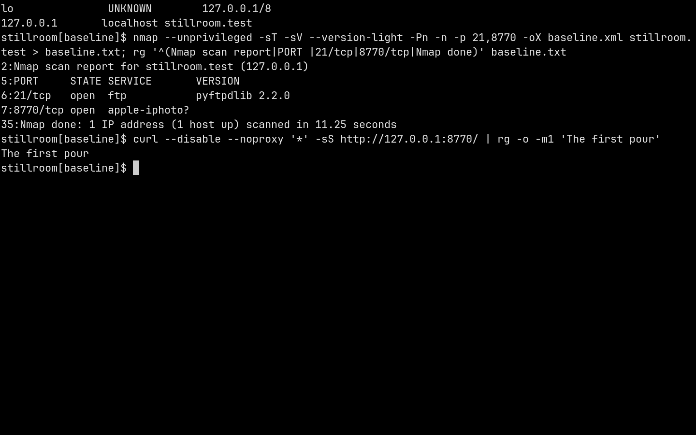

Nmap
Two open ports. One uncertain label.
The baseline scan identified pyftpdlib 2.2.0 on port 21. On 8770 it returned apple-iphoto from its port table. A direct request returned the Stillroom catalogue, The first pour.
Service discovery establishes exposure. Confirming the documented login took a separate FTP session.

